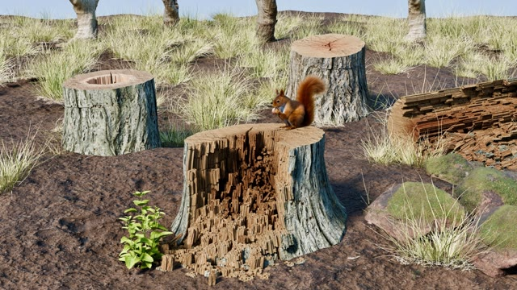
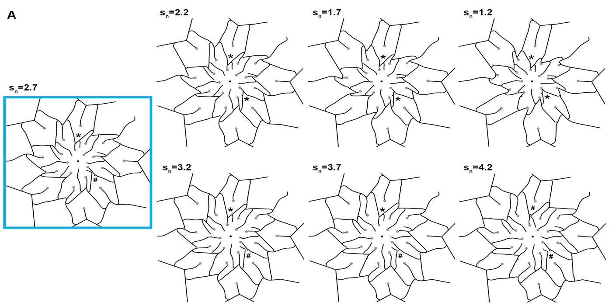
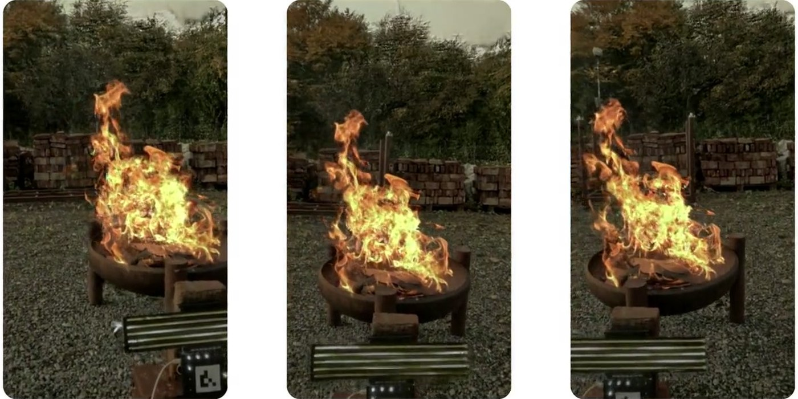
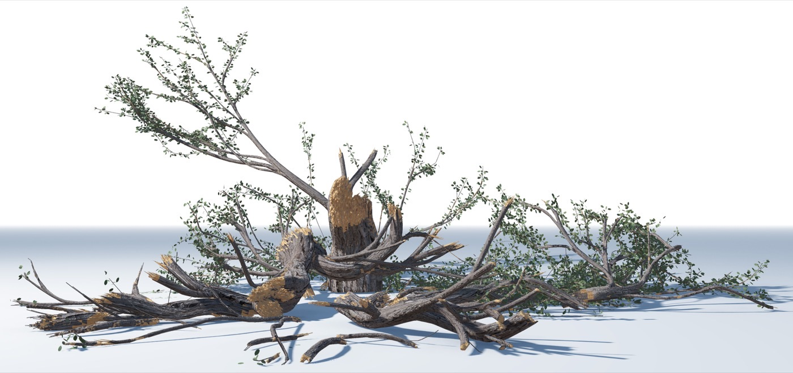
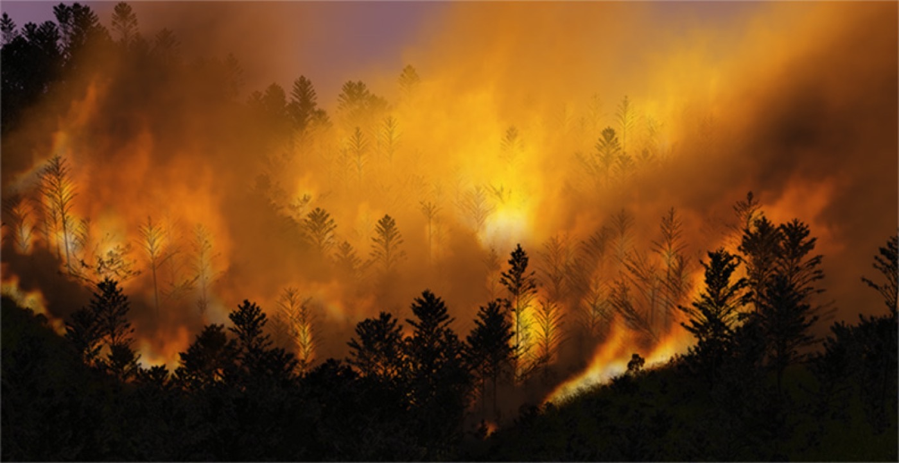
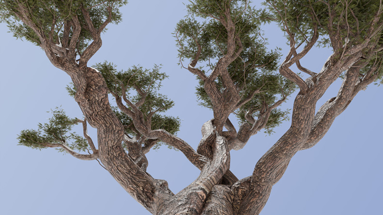
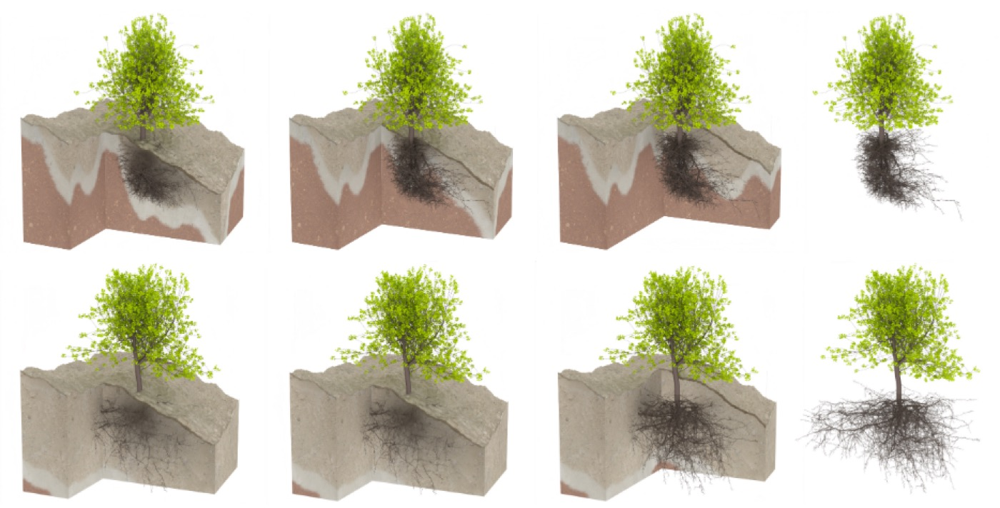

Woodstock: Interactive Modeling of Fungal Wood Decay
An interactive biophysical-mechanical model of fungal wood decay, coupling fungal colonization, moisture transport, tissue degradation, and fracture in volumetric tree models.
Projects
A selection of recent SIGGRAPH papers from the lab and our collaborators. Each links out to the project page with paper, video, and supplementary material.

An interactive biophysical-mechanical model of fungal wood decay, coupling fungal colonization, moisture transport, tissue degradation, and fracture in volumetric tree models.

Vascular strands in the shoot apex are initiated inside the vascular cylinder rather than by surface auxin, yet still follow the phyllotactic pattern. A model of mutually repelling strands reproduces the observed spacing and the 137° divergence angle, revealing self-organization behind vascular patterning.
An optimization framework for configuring vegetation in cities, arranging tree placement and species selection against objectives such as shading, cooling, and pedestrian-view greenery across large urban scenes.

Reconstructing dynamic, high-frequency flame phenomena from multi-view video captures using Gaussian splatting, with a new real-world fire dataset recorded with synchronized action cameras.
A synthetic dataset of real paintings rendered in virtual gallery environments under varied viewpoints and lighting, enabling training and benchmarking of instance-level artwork recognition.

Computational modeling of tree branches and wood using strand-based representations with Cosserat rod physics to simulate realistic breaking patterns.
A combustion simulation framework modeling fire phenomena across solids, liquids, and gases with multi-species thermodynamics and reactive transport.

A simulation approach for dynamic wildfire interactions including combustion, heat transfer, and firebrand transport across vegetation and soil.

A strand-based volumetric approach for procedural tree modeling that captures lateral development and enables interactive generation of detailed tree structures.

A procedural modeling approach that simulates realistic tree development by coordinating above-ground shoots with underground root systems through soil modeling and long-distance signaling.